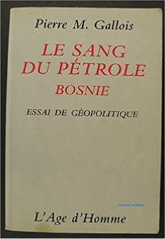

J’ai écrit, traduit, « rewrité », mis en pages, conçu, retaillé ou rapiécé des milliers de livres dans ma vie. Je ne suis l’auteur que d’une dizaine d’entre eux. Seuls deux, pour le moment, sont des œuvres de fiction : Le Miel et Le Rayon bleu.
Depuis que Le Miel est paru, début 2014, j’ai regardé ma « carrière » littéraire comme si elle concernait la vie d’un autre. Lorsque j’ai vu mon nom sur la couverture coquille d’œuf de la plus prestigieuse collection de langue française, la « Blanche » de Gallimard, j’ai cru un instant que mes amis m’avaient fait une farce pour Noël.
Même dans mon pays d’origine, mon nom sonne insolite, pour ne pas dire embarrassant. On me demande souvent si c’est un pseudo, et je réponds : non. J’ai toujours eu en horreur les alias. Même sur les réseaux sociaux, je me présente sous ma pleine et encombrante identité. Dès l’école, en Suisse, il m’a fallu imposer ce nom de famille rare et menaçant en insistant toujours sur la prononciation correcte du « t » final. « Je ne suis pas Dépôt ni Despô, je suis Despote ! »
NOMEN EST OMEN
Un nom, c’est un destin, disaient les Anciens. De fait. Je n’ai jamais pu marcher dans le rang, jamais pu m’empêcher de poser les questions qu’il est convenu de taire. Je ne suis pas quérulent ni sermonneur, je suis curieux et logique. Cela a suffi à me mettre dans une pose d’éternel dissident : littéralement, celui qui est assis de travers. Ce n’est même pas une pose consciente, du reste. Le dissident est comme l’hurluberlu qui a confondu la voie in avec la voie out et qui, entendant la radio mettre en garde contre « un fou roulant à sens contraire sur l’autoroute », s’exclame : « Comment ça, un fou ? Des milliers de fous, oui ! » Il est là, il est ainsi, il ne peut pas faire autrement.
Néanmoins, il arrive parfois que le dissident soit le seul à emprunter la voie juste et que la société entière se trompe de sens. Cela ne l’empêchera pas d’être déchiqueté ou envoyé à l’asile. La loi du nombre, à notre époque, est la seule loi. La seule chance du dissident, c’est que quelqu’un, ailleurs, au-dessus de la mêlée, ait la clairvoyance ou l’intérêt de lui donner raison. Qui aurait entendu parler des dissidents soviétiques ou chinois si l’Occident n’avait pas eu intérêt à les utiliser contre leur propre régime ? Et qui entend parler aujourd’hui des dissidents occidentaux lorsque le régime ne connaît pas de système extérieur à lui-même — ou plutôt : lorsqu’il s’arrange pour en dénier efficacement l’existence.
LE DISSIDENT EST UN FOU QUI S’IGNORE
Personnellement, j’ai enfourché ma selle de dissident en peau de cactus dès l’entrée à l’université, à la fin des années 1980. Le conformisme intellectuel du milieu universitaire m’avait sidéré d’emblée. Je n’ai pas eu la présence d’esprit de garder pour moi mes observations. Au fond, c’est tant mieux. Le double jeu est un jeu dangereux. A la longue, on finit par devenir l’idiot qu’on feint d’être. Et il n’est rien de plus stérilisant, au point de vue de la création, que l’hypocrisie.
On m’avait rapidement fait comprendre que la section tacite de mon livret scolaire — les appréciations sur le comportement et les idées qu’on vous prête — annulerait toujours les bonnes notes de la section publique. Même si, dans mon for intérieur, je ne me reconnaissais d’aucune manière dans les idées « pathologiques » et « nauséabondes » qu’on me diagnostiquait. Le bon Dr Knock déclarait toute personne bien portante un malade qui s’ignore et, du même coup, ne s’occupait que de soigner les personnes qui vont bien. Elles requièrent d’autant plus d’examens que leur mal est plus invisible. De même font les soucieux infirmi.er.ère.s de l’université. Je paraissais trop sain d’esprit pour ne pas être gravement atteint.
QUAND LE SIMPLE TÉMOIGNAGE EST UN ENGAGEMENT
J’ai définitivement verrouillé mon cas en entrant au service des éditions L’Age d’Homme, qui étaient mondialement célèbres, à cette époque-là, pour leur travail d’édition des dissidents russes. L’histoire venait de leur donner spectaculairement raison. Raison de plus pour les mettre en quarantaine !
Dans le droit fil de ce travail d’éclaireur solitaire face à l’illusion soviétique, nous avons entrepris de déconstruire ce « cas d’école » de désinformation (comme l’a décrit Vladimir Volkoff) qu’était la fabrication médiatique du conflit yougoslave. Je connaissais la langue du pays, son histoire, ses religions, ses mentalités. Autant de travers rédhibitoires ! Je ne pouvais qu’être de parti pris. Dans les médias de grand chemin, impartialité rimait avec incompétence. Des années durant, j’ai dû écouter à la radio et lire dans les colonnes des « journaux de référence » de doctes enfumeurs qui massacraient les noms de lieux et les noms de famille locaux, qui confondaient des réalités aussi incompatibles que, par exemple, Guillaume Tell et le bailli Gessler (s’il se fût agi de la Suisse) et qui, très souvent, avaient des conflits d’intérêts gros comme le bras avec les parties impliquées « fréquentables » ou leurs sponsors.
Nous avons semé, heureusement, dans les bibliothèques et les ménages, une ou deux douzaines d’ouvrages documentant cette folie qui n’est toujours pas exorcisée et qui a eu, entre autres, pour effet d’offrir aux islamistes des structures étatiques au cœur de l’Europe. Sans ces livres, comme Le Sang du Pétrole du général Gallois, nous-mêmes pourrions croire aujourd’hui, un quart siècle plus tard, avoir affabulé. Mais le livre en papier est un témoin gênant. Une fois dispersé dans la nature, il est aussi difficile à extirper que l’uranium appauvri. Avec le recul, néanmoins, tout ce travail documentaire reste un témoin, non un tribun.
Les documents et les essais ne gagnent pas les âmes et les cœurs et ne sont généralement lus que par un public préconvaincu. Les vérités qu’ils renferment sont réfutables, ne serait-ce qu’en les ensevelissant sous des contrevérités plus bruyantes et plus nombreuses. Elles sont d’autre part exploitable. Autour de la « cause » que nous défendions se sont greffés d’étranges milieux, de gauche comme de droite, jamais du centre bien tempéré, qui avaient tous maille à partir avec le « Système ». Ainsi, des ouvrages savants d’une sérénité et d’une probité sans failles risquaient-ils de se transformer soudain en pavés destinés à fracasser des vitres. Et leur éditeur, ou traducteur, d’être associé malgré lui à des mouvements politiques plus étroitement encore que s’il y avait milité.
VITE ! CALCUTTA !
Puis il y eut une rupture. Le 24 mars 2009, par un vol de nuit, je suis parti sans un sou en poche pour l’Inde. Ce jour-là, à Belgrade, on commémorait le dixième anniversaire du bombardement de la Serbie par l’OTAN. Pour l’occasion, nous avions imprimé un jeu de cartes postales rappelant l’humour héroïque des Serbes sous ce déluge de feu disproportionné. Au grand palais des congrès se tenait une assemblée de messieurs d’âge mûr qui dénonçaient la conspiration mondialiste contre leur petit pays. Les médias d’État avaient déjà adopté cette étrange retenue vis-à-vis d’événements qui touchaient au cœur chaque être humain sous ces latitudes, comme s’ils n’étaient que des groupes d’experts en visite dans une région sinistrée.
Mes belles cartes postales, personne ne les regardait, alors qu’elles étaient le fruit d’un travail de recherche minutieux (car l’État serbe semblait avoir lui-même veillé à effacer les traces des crimes d’autrui). Du reste, les messieurs d’âge mûr aux idées patriotiques et démocratiques, personne ne les regardait non plus. En Serbie, comme en France, en Suisse ou n’importe où ailleurs, le salut de la nation ne parvenait pas à rassembler le dixième du public d’une chanteuse à la mode.
J’ai décollé avec soulagement cette nuit-là pour Francfort, et de là, au hasard, pour Calcutta. Autant les auspices étaient sombres pour la cause commune, autant ils m’étaient personnellement favorables. Quelques jours plus tôt, une agence de voyages belgradoise m’avait délivré un billet d’avion sur parole. Puis, juste avant le décollage, j’ai reçu sur mon mobile l’appel de la responsable des services culturels de mon canton suisse. Elle m’apprit que j’avais reçu une bourse d’écriture que j’avais sollicitée sans aucun espoir de succès, au point que je l’avais entre-temps oubliée. Ma seule question fut : « Quand est-ce que vous me la versez ? » Le synopsis qui avait convaincu la commission est devenu par la suite Le Miel. Sans mon besoin d’argent à l’époque et sans l’État de Vaud, je ne serais jamais devenu romancier. Sans la mise à nu complète imposée par l’Inde, non plus.
LE MIRACLE DE LA LITTÉRATURE
Mon récit tragicomique fondé sur une histoire vraie de la guerre en Krajina fut rapidement publié par le premier éditeur à qui je l’avais envoyé par la poste, par Gallimard. Lorsqu’il a commencé à circuler, à remporter des prix et à être lu dans les lycées, je me suis rendu compte que c’était une affaire sérieuse — mais qui arrivait à un autre. Moi qui avais tant traduit d’œuvres littéraires, je commençais seulement à comprendre quelle était leur prodigieuse puissance. Le black-out médiatique sur le sort tragique de la Krajina n’avait pas été forcé à l’aide d’un bélier, ni avec de la dynamite, du « lobbying » ou des campagnes de relations publiques, mais simplement avec une plume. Mon vieux sage Nikola, l’apiculteur, et son énergumène de fils Vesko, avaient été adoptés par des milliers de lecteurs francophones comme s’ils étaient de leur famille. C’est peut-être alors que, pour la première fois, quelqu’un à l’Ouest avait fini par se dire que l’opération « Tempête » et l’éradication de la très ancienne population serbe de Krajina n’étaient pas un châtiment mérité des « serbocommunistes » ou des « serbofascistes », mais un effroyable crime. Ce que le brouhaha des nouvelles ne permettait pas de comprendre, les personnages « de chair et d’os » d’un roman le rendaient tangible.
MISE À NU
Mon destin littéraire et personnel est indissolublement lié à ce voyage fatidique en Inde. L’odeur unique de Calcutta — odeur de feu, de fer brûlé, d’épices orientales et de cadavres humains — m’est à jamais restée dans le nez. Je me suis immergé, jusqu’à mettre ma vie en péril, dans ce continent pollué, surpeuplé et bruyant où l’on meurt dans la rue, et où pourtant les sourires éclatent partout. Mon cœur s’est dissous dans ce milliard d’âmes pieuses qui prient à chacun instant leurs divinités et leur destinée de leur accorder la miséricorde de vivre, de boire ou de mâcher le prochain instant de leur passage en ce monde. C’est seulement sous ces tropiques que j’ai saisi le pouvoir miraculeux de celui qui saute dans un abîme avec la ferme conviction que la main divine le sauvera. J’ai compris avec le corps et le cœur, et pas seulement avec l’esprit, que notre environnement immédiat ne dépend que de nous-mêmes et du regard que nous posons sur lui. Que « nous faisons davantage par ce que nous sommes que par ce que nous faisons », comme l’a résumé le mystique du désert, Charles de Foucauld. Sans Le Miel, il n’y aurait pas eu de romancier, or le romancier a fait mûrir le chroniqueur et l’éditeur politique. Comme Orwell, comme Céline, comme Bernanos ou Naipaul, je crois que notre œuvre de création et notre mission de témoignage sont indissociables. Aussi indissociables que l’âme et le corps d’un être humain.
Partager cette page